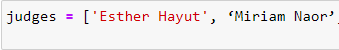

שלום,
אני קצת מסתבכת עם עצמי.
מצאתי את מי שאמור להיות ראשון ומי שאמור להיות אחרון ברשימה.
אני לא ממש בטוחה איך למצוא את האחרים. חשבתי להחסיר את מה שמצאתי מהרשימה המקורית, אבל לא למדנו עדיין איך לעשות משהו כזה.
בלי רמז עבה מדי, למישהו יש הכוונה?

שלום,
אני קצת מסתבכת עם עצמי.
מצאתי את מי שאמור להיות ראשון ומי שאמור להיות אחרון ברשימה.
אני לא ממש בטוחה איך למצוא את האחרים. חשבתי להחסיר את מה שמצאתי מהרשימה המקורית, אבל לא למדנו עדיין איך לעשות משהו כזה.
בלי רמז עבה מדי, למישהו יש הכוונה?
היי!
התרגיל מנוסח לא טוב לצערי, לוקח את האשמה ומתנצל על הטרחה 
את לא צריכה לפתור אותו עבור המקרה הכללי – מספיק לפתור עבור המקרה שמוצג במחברת.
היי ים, כלומר פשוט צריך כתוב קוד המבצע השמה בלבד לרשימה הנתונה?
נכון זה התרגיל הבסיסי ביותר בחוברת, סתם כדי להרגיש טיפה עבודה עם אינדקסים
תודה!
זה אכן הופך את זה לפשוט יותר!
ועם זאת-זה קוד פחות יפה ויותר מסורבל.
היי, לא הבנתי לגמרי את הכוונה, נדרש לסדר ידנית את הרשימה לתוך רשימה חדשה לפי סדר א"ב?
תוכל לשלוח ניסוח מחדש של התרגיל?
תודה
גם אני לא הבנתי.
פשוט ליצור רשימה חדשה מסודרת?
להכין קוד שיקבל רשימה מבולנגת ויוציא כפלט רשימה מסודרת נשמע כרגע בלתי אפשרי.
הבנתם בדיוק את הכוונה
לקחת את הרשימה שמופיעה בתרגיל, ולסדר אותה לפי סדר אלפבתי.
אין צורך להכין קוד שיסדר רשימה שקיבלתם כקלט.
שאלה נוספת לגבי התרגיל הזה - הכוונה לסדר אלפבתית לפי שמות פרטיים, או שמות משפחה?

חבר’ה הגזמתם.
מדובר בתרגיל שבודק שאתם מסוגלים לגשת למקום ברשימה.
תסדרו איך שבא לכם רק תראו לנו שאתם מבינים את החומר.

זה היה אמור להיות הכי קל שם???
כתבתי קוד של 80 שורות רק כדי שהוא יעשה את הסדר לבד
לא נורא, היה אחלה אימון
למה צריך לגשת למקום מסוים ברשימה אם אמרתם שהכוונה היא לסדר ידנית ולעשות השמה…
לא הבנתי וחוששת להגיש משהו שלא יחשב…
תודה… לרגע נלחצתי 
תודה.
זה בדיוק מה שרציתי לשאול, שברתי את הראש על איך לנסות לפתור את המקרה הכללי, ולא הצלחתי למצוא את הכלים שיעשו את זה.
אשמח לעזרה:
ניסיתי לפתור את התרגיל, וכל הזמן הייתה לי הודעת שגיאה.
אז חזרתי אחורה וניסיתי לבצע פעולה פשוטה יותר: פשוט להדפיס את הרשימה, וגם אז קיבלתי הודעת שגיאה.
אשמח להבין מה אני עושה לא נכון.
אלה השורות של הקוד:
judges = [‘Esther Hayut’, ‘Miriam Naor’, ‘Asher Grunis’, ‘Dorit Beinisch’, ‘Aharon Barak’]
print(judges)
TypeError Traceback (most recent call last)
in
----> 1 print(judges)
TypeError: ‘tuple’ object is not callable
@slimorna
העתקתי את השורות שלך למחברת. הייתי צריכה להחליף את הצ’וקו שלך באחד אחר.
אני לא יודעת באיזה מקש השתמשת, אבל הוא לא זיהה אותם אצלי.
צרפתי תמונה - אסתר עם השינוי שלי, ומרים עם שלך - רואה את ההבדל?

דרסת את המשתנה print
לא הבנתי מה אמור להיות מסובך בתשובה… יצא לי 5 שורות  פספתי משהו? לא עשיתי מיון כללי… רק לקחתי את הרשימה הקיימת וסידרתי.
פספתי משהו? לא עשיתי מיון כללי… רק לקחתי את הרשימה הקיימת וסידרתי.
זה מה שהתכוונו שנעשה
הרוב (כולל אני) הבין את זה בהתחלה כמשימה כללית יותר - לכתוב קוד שמסדר לא רק את הרשימה הזו אלא כל רשימה/כל סידור אפשרי של הרשימה הזו או משהו כזה.